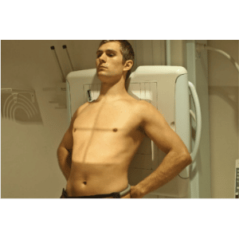
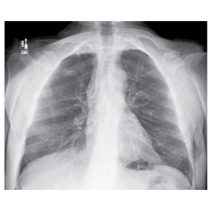
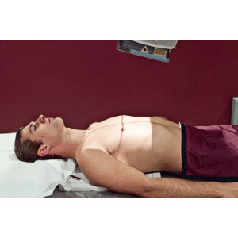

TÓRAX - ÁPICO LORDÓTICO
Paciente
Em ortostático/ sentado ou D.D, Em AP, parte posterior do tórax em contato com o receptor, PMS posicionado sobre à LCE, mãos nos quadris, ombros e cotovelos voltados para frente.
Chassis / Filme
24X30 / 30X40 transversal , posicionado em relação ao R.C..
Raio central
⊥ na horizontal, orientado para o centro do osso esterno.
DFF
1,80 m – com bucky.


Observação: Em apnéia após inspiração profunda.
TÓRAX - ÁPICO LORDÓTICO / AP - ALTERNATIVA
Paciente
Em ortostático/ sentado ou D.D, Em AP, parte posterior do tórax em contato com o receptor, PMS posicionado sobre à LCE, mãos nos quadris, ombros e cotovelos voltados para frente.
Chassis / Filme
24X30 / 30X40 transversal , posicionado em relação ao R.C..
Raio central
com um ângulo de 20 à 30º cranial , orientado para o centro do osso esterno.
DFF
1,80 m – com bucky.

Observação: Em apnéia após inspiração profunda.